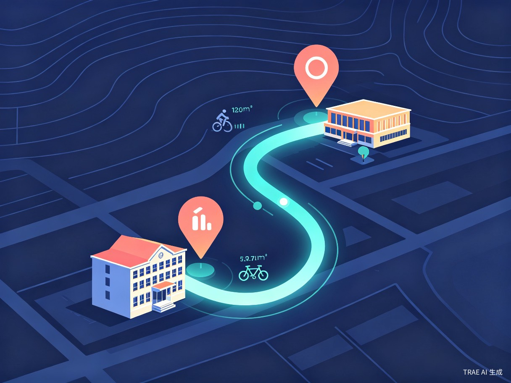

多源数据自动融合
对接教务系统、企业微信、日历 App、邮件、Notion 等数据源，建立统一事件模型。
- 支持 OAuth 授权与 API 接入，覆盖 10+ 主流平台
- 自然语言解析非结构化通知（微信群消息、邮件正文）
- 事件去重与字段补全，自动识别"调课""改期"语义
一款能够自动抓取教务系统、微信群与日历 App 数据的智能排课与提醒系统，用 AI 解决课程冲突、调课通知滞后与通勤延误等真实痛点。
从一次"跑空教室"的真实痛点出发，构建一个真正懂你的私人日程助理。
创意名称：智汇日程 —— 基于多源数据融合的 AI 智能排课与提醒系统。
想解决的问题非常具体：学生和职场人的课程表、会议安排分散在教务系统、微信群、日历 App等多个平台，面对调课、改期、临时会议等变动时信息严重滞后，导致错过重要事项或时间安排冲突。
为什么会想到做这件事？源于我自己作为学生的亲身经历——没看到群里的调课通知而跑空教室，因忘记某个 Deadline 而焦虑。我意识到大家需要一个能"自动整合所有信息"的私人助理。
它大概是一个能够自动抓取并同步多平台日程，利用 AI 进行冲突检测、路径规划、个性化提醒的 Web 应用或小程序。
对接教务系统、企业微信、日历 App、邮件等多源数据，建立统一事件模型。
AI 实时检测时间冲突、地点跨度，提供通勤建议与个性化提醒策略。
从被动接收群消息到主动个性化触达，关键事项一条不漏。
面向高校学生与多线程职场新人，覆盖早间查看、复习周规划、临时会议等高频场景。
基于 200 名学生与职场新人问卷调研结果
从效率提升到社会价值，让时间管理回归生活本身。
每日日程整理时间从 15 分钟缩短至 0 分钟
高校学生 vs 职场新人 · 多维度特征雷达图
"智汇日程"能将用户每天整理日程的时间从 15 分钟缩短至 0 分钟（全自动同步），并通过智能路径规划减少通勤延误，极大提升时间管理的精准度。
有助于缓解当代年轻人的"日程焦虑症"，通过合理的各种提醒机制，帮助大家建立更有序的生活节奏，从而释放更多精力投入到核心学习和工作中去。
围绕"自动同步 → 智能分析 → 个性化提醒"三大核心能力构建产品闭环。
对接教务系统、企业微信、日历 App、邮件、Notion 等数据源，建立统一事件模型。
基于 LLM 的事件语义理解，提前预警时间冲突、地点跨度与通勤时长。

学习用户作息习惯，在最合适的时机、通过最合适的渠道进行提醒。
从数据采集到智能输出，五层流水线协同工作。
flowchart LR A[数据源层
教务系统 / 微信 / 日历 / 邮件] --> B[采集层
API + 爬虫 + Webhook] B --> C[解析层
LLM 语义理解与结构化] C --> D[事件模型层
统一日历事件存储] D --> E[AI 处理层
冲突检测 + 路径规划] E --> F[提醒输出层
多通道个性化推送] F --> G[用户反馈] G --> E
从原始数据到最终触达的核心环节
| 模块 | 技术选型 | 核心能力 | 关键指标 |
|---|---|---|---|
| 数据采集 | OAuth 2.0 · Webhook · 异步爬虫 | 多源统一接入，断点续传 | 覆盖 10+ 平台 |
| 语义解析 | LLM（GPT-4o / Claude / 通义） | 非结构化文本 → 结构化事件 | 解析准确率 ≥ 95% |
| 事件存储 | PostgreSQL + Redis + CalDAV | 统一日历模型，毫秒级查询 | P99 < 50ms |
| 冲突检测 | 时空索引 + 规则引擎 | 实时检测时间与地点冲突 | 响应延迟 < 200ms |
| 路径规划 | 高德 / Google Maps API | 通勤方案与时长估算 | 覆盖 300+ 城市 |
| 提醒分发 | APNs · 微信模板 · 短信 | 多通道分级触达 | 送达率 ≥ 99.5% |
从 MVP 到平台化，分四阶段稳步推进。
对接 1 所高校教务系统 + 微信群机器人，完成事件解析与基础提醒闭环。
引入冲突检测与路径规划能力，上线 Web 与小程序双端，邀请种子用户内测。
进入职场场景，对接企业微信、飞书、钉钉，拓展职场新人用户群。
开放 API 与插件市场，构建"个人时间操作系统"生态。